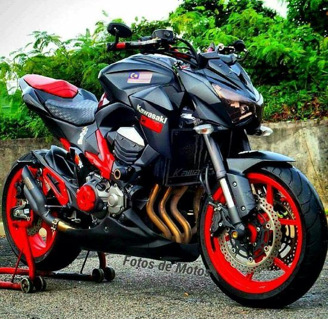

Invenção da Motocicleta
origem da motocicleta remonta ao século XIX, quando inventores em todo o mundo começaram a experimentar a ideia de adicionar um motor a uma bicicleta. A primeira motocicleta verdadeira foi criada por Gottlieb Daimler e Wilhelm Maybach na Alemanha, em 1885. Esta invenção, chamada de “Reitwagen”, foi a primeira a usar um motor de combustão interna, uma inovação que se tornou a base para todas as futuras motocicletas.
Evolução e Desenvolvimento
Apesar de Daimler e Maybach terem sido os primeiros a inventar a motocicleta, foram os inventores e fabricantes subsequentes que realmente aprimoraram e popularizaram o veículo. Na virada do século XX, empresas como a Indian Motorcycle Co. nos Estados Unidos e a Triumph Motorcycles no Reino Unido começaram a produzir motocicletas em massa, tornando-as mais acessíveis para o público em geral.
Durante as duas guerras mundiais, a motocicleta provou ser um recurso valioso para as forças militares, devido à sua velocidade e capacidade de manobra. Posteriormente, a popularidade da motocicleta como veículo pessoal cresceu, particularmente nos Estados Unidos, onde surgiu uma cultura de motocicleta distinta, com o crescimento dos clubes de motociclistas e a popularização do estilo de vida do motociclista.
A Motocicleta Como Estilo de Vida
A partir da segunda metade do século XX, a motocicleta deixou de ser vista apenas como um meio de transporte e começou a ser associada a um estilo de vida específico. Filmes como “O Selvagem” com Marlon Brando e “Easy Rider” com Peter Fonda e Dennis Hopper ajudaram a solidificar a imagem do motociclista como um rebelde e um livre-pensador, uma imagem que ainda persiste até hoje.
- Mottu Sport 110i
- Honda CB 300F Twister
- Yamaha Factor 150
- Yamaha Fazer 250
- Honda CG 160